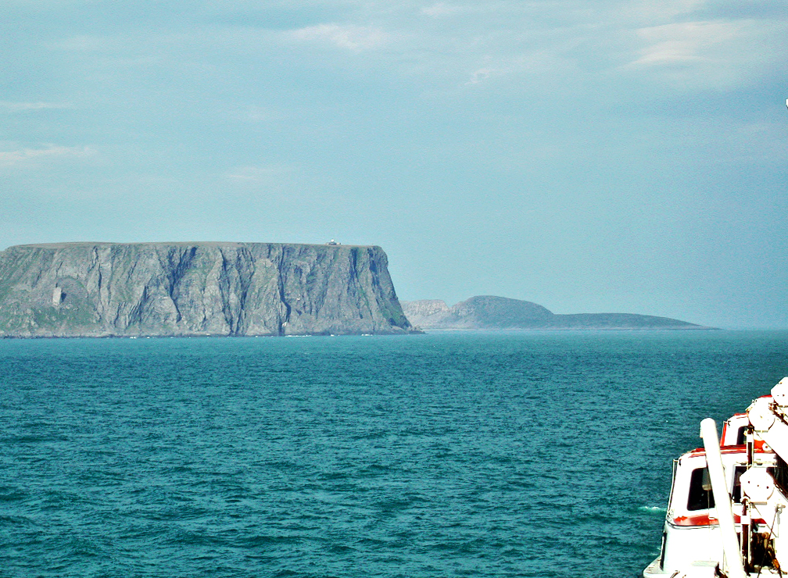

У этого термина существуют и другие значения, см. Норвегия (значения). Королевство Норвегия букмол Kongeriket Norge нюнорск Kongeriket Noreg Флаг Большой герб Флаг Большой герб Гимн: «Ja, vi elsker dette landet» «Да, мы любим этот край» Duration: 1 минута и 3 секунды.1:03 Норвегия на карте Европы Норвегия на карте Европы Основано 15 декабря 1899 года (официально) Дата независимости 7 июня 1905 (провозглашена) 26 октября 1905 (признана) (от унии со Швецией) Официальные языки норвежский (букмол и нюношк)[1] Столица Осло[2] Крупнейшие города Осло, Берген, Тронхейм, Ставангер Форма правления конституционная монархия[2] Король Харальд V Премьер-министр Йонас Гар Стёре Председатель Стортинга Масуд Гараххани Территория • Всего 385 207[3] км² (67-я в мире) • % водной поверхности 5,7 Население • Оценка ↗5 550 203[4] чел. (115-е) • Плотность 14,4 чел./км² ВВП (ППС) • Итого (2020) 349,5 млрд[5] долл. (51-й) • На душу населения 64 856[5] долл. (8-й) ВВП (номинал) • Итого (2020) 366,4 млрд[5] долл. (30-й) • На душу населения 67 989[5] долл. (4-й) ИЧР (2022) ▲ 0,966[6] (очень высокий; 2-е место) Названия жителей норвежец, норвежка, норвежцы Валюта норвежская крона (NOK, код 578) Интернет-домен .no Код ISO NO Код МОК NOR Телефонный код +47 Часовой пояс UTC+1:00 Автомобильное движение справа[7] Логотип Викисклада Медиафайлы на Викискладе Норве́гия (букмол Norge МФА: [ˈnɔ̂rɡə]о файле, нюнорск Noreg), официальное название — Короле́вство Норве́гия (букмол Kongeriket Norge, нюнорск Kongeriket Noreg) — государство в Северной Европе, располагающееся в западной части Скандинавского полуострова и на огромном количестве прилегающих мелких островов, а также архипелаге Шпицберген (Свальбард), островах Ян-Майен и Медвежий в Северном Ледовитом океане.
Заморской территорией Норвегии является остров Буве в южной части Атлантического океана. Также Норвегия претендует на территории в Антарктике, попадающие под действие конвенции 1961 года — остров Петра I и Землю Королевы Мод.
Форма правления — конституционная монархия, форма государственного устройства — унитарная. Король — Харальд V, премьер-министр — Йонас Гар Стёре. Норвегия подразделяется на 15 фюльке (губерний), которые в свою очередь делятся на 357 муниципалитетов[8].
Столица Норвегии и резиденция правительства — Осло.
Норвегия — многонациональное государство с широким этнокультурным, религиозным, расовым и национальным многообразием
Норвегия входит в НАТО, Скандинавский паспортный союз и Шенгенскую зону.
С 2001 по 2006 и с 2009 по 2020 года Норвегия возглавляла список стран по индексу человеческого развития.
Содержание
Этимология
Название страны происходит от древнескандинавского Norreweg — «северный путь», которое первоначально относилось к прибрежному морскому пути, по которому норманны выходили в северные моря. Впоследствии этим названием стали обозначать западное побережье Скандинавского полуострова вдоль морского пути, а затем и возникшее здесь государство[9]. Страна имеет два названия, на обеих версиях норвежского языка — Norge на букмоле и Noreg на нюношке.
География
Географическое положение
Норвегия расположена между 59° и 81° северной широты и 4° и 32° восточной долготы[10]. Её территория тянется узкой полосой (самая широкая часть — менее 420 км) вдоль северо-западного побережья Скандинавского полуострова и включает в себя все острова, островки и скалы, находящиеся в её территориальных водах.
С востока и юго-востока Норвегия граничит со Швецией (на протяжении 1630 км), Финляндией (736 км) и Россией (196 км). С северо-запада её омывает Норвежское море, с северо-востока — Баренцево море, а с юга — Северное море. Протяжённость береговой линии составляет 25 148 км.
Некоторые острова, принадлежащие этому государству, находятся на большом удалении от Скандинавского полуострова:
- архипелаг Шпицберген (Свальбард) в северной части Норвежского моря, суверенитет над которым является международно признанным с 17 июля 1925 года;
- Ян-Майен между Гренландским и Норвежским морями;
- остров Буве на юге Атлантического океана;
Также Норвегия претендует на территории, попадающие под действие Антарктической конвенции 1961 года:
- Остров Петра I у побережья Антарктиды;
- Земля Королевы Мод в Антарктиде.
Однако эти территории по закону от 27 февраля 1930 года, резолюции парламента от 23 апреля 1931 года и постановлению монарха от 14 января 1939 года не являются частью Норвегии.
Физико-географические условия
Вся страна чрезвычайно гориста; она образует огромное нагорье, состоящее из гнейса, гранита и других образований архейского и палеозойского периодов; в восточной части она изрезана большими долинами, а в западной и северной — глубоко вдающимися в сушу морскими фьордами. Во многих местах горы имеют округлую форму, и пейзаж носит по преимуществу вид большого волнообразного плато, на котором долины и заливы кажутся лишь совершенно незначительными трещинами.
Из всей площади, занимаемой страной, 39 000 км² лежат выше 1000 м над уровнем моря, 91 000 км² — на высоте от 500 до 1000 м. Средняя высота всей территории Норвегии над уровнем моря составляет около 490 м. Ввиду всего этого, площадь обрабатываемой или вообще пригодной для сельского хозяйства земли составляет весьма незначительную часть всей территории: всего лишь 2400 км² занято пашнями, тогда как необитаемые горы, болота и т. п. занимают 235 000 км², а ледники — 7000 км².
Финнмарк
Самая северная местность Норвегии называется Финнмарк (также см. Баренц-регион), восточная часть которой, граничащая с Россией, не представляет никаких значительных возвышенностей и наполнена лишь закруглёнными холмами и нагорьем; омывается бурными волнами Северного Ледовитого океана. Внутри же страны орошаемые крупными реками (в особенности Таной) долины, покрываясь летом богатой растительностью, производят впечатление более южных стран, но по причине долгой и суровой зимы большого значения для земледелия не имеют.
К западу от Нордкапа горы принимают почти совершенно плоский вид, и на высоте 200—400 м спускаются почти отвесно к морю. Здесь также имеются значительные реки и прежде всего широкая р. Альта (Alta), подобно р. Тана, известная уже целые столетия своей замечательной ловлей лососей. На берегах этой реки лежит плодородная местность, носящая то же название, с прекрасными лесами и хорошо обработанными полями; это самая северная точка, где выращивают рожь. В то время как восточная часть Финнмарка со своими крупными фьордами (Тана, Лаксе, Порсангер и Варангер, или Варяжский) вовсе не защищена со стороны моря какими-нибудь островами, от Нордкапа начинается целый ряд островов, прикрывающих берега Норвегии со стороны моря и представляющих характерную для Норвегии черту в орографическом отношении. Ближе всего лежат более крупные острова (как Магерёй с Нордкапом и др.); далее к югу идут вперемешку большие и мелкие острова, и здесь они уже принимают своеобразный характер скандинавского Skjærgård', как здесь называют этот ряд защищающих материк островов, из которых самый меньший носит название Skjær (шхеры). Тут же лежат вблизи и широкий Альтафьорд, и достигающий почти 100 км в длину Лингенфьорд, который с запада ограничивается могучей (альпийской) снеговой и ледниковой цепью, доходящей до 1500—2000 м в высоту (Goatzapaise, Golzevarre, Jiehkkivarre, Nialavarre и др.). Эта цепь представляет собой орографический предел Финнмаркского нагорья.
Норланд
С Лингена начинается так называемая «северная страна» Nordland, политические границы которой почти совпадают с географическими. Этнографическая северная граница в Средние века находилась немного южнее Лингена. Эта изрезанная местность тянется на пространстве нескольких градусов широты на юг, сохраняя повсюду тот же самый характер. Горы здесь имеют высоту в основном 1000—1800 м; их высочайшая вершина Сулитьельма (Sulitjelma, 1880 м) находится на шведской границе, с большим ледником.
Ближе к берегу лежит большой ледник Свартисен (Svartisen, 65 км длины, площадью более 1000 км², 1097 м высоты). Только западный склон горы принадлежит Норвегии, остальная же часть, по ту сторону высочайшего горного хребта, шведская. От внутренних углов морских заливов граница королевства проходит местами всего в 20—30 км, а в одном месте — даже в 15 км. Важнейшими фьордами на этом берегу являются Бальс (ниже Лингена), Маланген, Офотен, Сальтен, Рана и Вефсен. Перед материком расположены многочисленные и в основном крупные гористые острова; севернее других лежит большая группа островов Вестеролен, из которых группа островов Лофотен далеко выходит в море.
Ниже Вефсенфьорда полоса твёрдой земли становится шире, горы ниже и широкая долина Наумудаль (проходящая по которой р. Намсен впадает в Намсенфьорд) представляет собой переход к равнинам; за ней расходятся в широкий, прекрасный бассейн Трондхеймсфьорда. Здесь лежат плодородные и хорошо обработанные местности (Trøndelag, в древнейшее время ядро Норвегии), которые, однако, в основном всё-таки сохраняют характер долин Норвегии. Местности по западной стороне этого глубоко и широко врезавшегося в материк фьорда малозаманчивы. Приблизительно под 63°, вблизи лежащего на высоте 600 м горного г. Рёруса (Røros), нагорье разрывается, причём значительные горы идут в южном направлении между обоими государствами и pp. Дал-ельв и Клар-ельв, огибают водораздел, следуя направлению морского берега на юго-запад и на всём этом протяжении, вплоть до замечательного спуска у Лесьеверксванда (лежащего на высоте 620 м озера, воды которого стекают на ЮВ в Скагеррак и на СЗ в Атлантический океан), обыкновенно называются Доврефьелль (Dovrefjell), хотя это название окрестности жителями прилагается собственно к той лишь части, через которую проходит главная большая дорога из Осло в Трондхейм. Эта часть гор на востоке ниже и менее дика. Но к западу местность становится более дикой и абсолютные отметки увеличиваются и достигают наибольшей высоты в виде вершины Снёхетты (Snøhetta), которая прежде долгое время считалась высочайшей горой в Норвегии, по новейшим измерениям высота её равна 2286 м. Северный отрог Доврефьелля довольно велик и пересекается двумя большими долинами (Оркдаль и Гэульдаль). Западнее идущая от Снёхетты Дрива образует долину Сюнндаль, окрестности которой представляют переход от Трёнделага к западному, береговому устройству поверхности. Главный горный хребет здесь внезапно сворачивает под прямым углом на юг и носит далее общее название Лангфьелла. Отсюда западный отрог рассекается большим отрогом, который вдаётся на 209 км в горную массу и образует одну из великолепнейших и живописнейших местностей Европы.
Затем уже южнее Трондхеймсфьорда идут Стангвиксфьорд и Сундальсфьорд с замечательно величественным видом и окружённый прелестной альпийской местностью Ромсдальсфьорд, самый внутренний отрог которого принимает в себя воды реки Рёумы (Rauma), протекающей через суровую и дикую Ромсдальскую долину (с Трольдтинд и Ромсдальсхорн, 1600—1900 м).
Затем идёт сложная система фьордов местности Сюннмёре, окружённой горами, высота которых достигает 1500—2300 м; прибрежья и острова здесь отличаются диким характером. К югу лежит Нордфьорд, отделённый длинным горным хребтом, который оканчивается мысом Стат (Stadt). Отдельные боковые заливы этого фьорда отличаются особенной дикостью, в то время как Фёрдефьорд и Дальсфьорд в южной части Сюндфьорда менее величественны и дики.
Затем идёт большой Согнефьорд, получивший своё имя от прилежащей к нему местности Согн. Внутри этой местности, на пространстве около 15 000 км², находятся высочайшие и самые дикие горные массивы Н., которым придано название Исполиновый Край (Jotunheimen). Здесь средняя высота нагорья, на котором поднимаются острые зубцы скал, достигает почти 1300 м. Так как снеговая граница здесь проходит на высоте 1400 м, то вершины гор должны были быть покрыты вечным снегом, если бы этому не препятствовали гладкие склоны гор; но зато каждая расселина или щель, каждая малозаметная отлогость, не совершенно крутой подъём горы сплошь покрыты снежной массой, и во многих местах сквозь расселины виднеются довольно часто и довольно большой глубины ледники (Jøkler). Всё это пространство представляет собою горную пустыню, по которой лишь изредка ступает нога человеческая. Более 60 вершин Исполинового Края (Jotunheimen) были подвергнуты измерениям и почти все показали высоту выше 2000 м. Наиболее значительны Гальдхёпигген (Galdhøpiggen, 2469 м) и Глиттертинд (Glittertind, 2452 м; 2464 м, если считать ледник), оба в Ломском (Lom) приходе в Гудбрандской долине (Gudbrandsdal), высочайшие изо всех известных пунктов северной Европы, окружённые целой массой почти таких же высоких скалистых вершин.

Hurrungane
В западной части Исполинового Края (Jotunheimen) возвышается группа Блудных детей (норв. Hurrungane, нем. Hurenkinder), достигающая 2000—2400 м в высоту. Со стороны Согнефьорда в это царство гор врезается несколько долин, и прежде всех Ордал (норв. Årdal) — чрезвычайно дикая, скалистая долина, жителям которой постоянно грозят лавины.
Западнее, между Согном, Сюндфьордом и Нордфьордом лежит ледник длиной 90 км и шириной 80 км. Эта занимающая около 1600 км² снежная область называется Юстедальсбреен (Jostedalsbreen) и достигает высоты 1600 м, тогда как нижний край спускающегося в долины ледника (глетчера) местами возвышается лишь на 130 м над поверхностью моря и лежит всего в 3 км от него. Эти ледники (в том числе 24 могут быть отнесены к первому разряду) наполняют собой долины Согна, Нордфьорда и Сондфьорда.
К югу от Ютунхеймена (Jotunheimen) идёт внутреннее горное плато с многочисленными поднимающимися над ним высокими вершинами, под названием Филлефиелль (Fillefjell). Сам Согнефьорд разделяется на несколько меньших заливов, из которых особенно Нерёфьорд (Nærøfjord), Фьерландсфьорд (Fjerlandsfjord) и Листерфьорд (Listerfjord) отличаются величественностью окружающей природы.
На юг от Согнефьорда лежит широкая горная страна, внутренняя часть которой состоит из плодородной местности Фосс, а берег с юга омывается водами Хардангер-фьорда. Места, лежащие по берегу этого фьорда, называются Хардангера и носят такой же характер, как и Согн. Внутри этой страны лежит большая плоская возвышенность, носящая название Хардангервидда, ограниченная с севера глетчером Хардангеръёкуль (Hardangerjøkulen) и высокими стенообразными скалами Халлингскарвена (Hallingskarven). Она занимает пространство в 12—15 тыс. км².
В западной части Хардангер-фьорда, на плоской сверху возвышенности одного полуострова, с трёх сторон окружённого Хардангер-фьордом и его рукавами Серфьордом и Аакрефьордом, лежит глетчер Фольгефон, длиной в 60 км и шириной 12—46 км, покрывая собой пространство в 150 км² и представляя величественное зрелище со стороны моря. Высшие пункты его доходят до 1654 м, нижняя граница вечного льда имеет очень разнообразную высоту, от 300 до 1000 м.
За чертой всех этих фьордов лежит с небольшими перерывами целый ряд островов, защищающих местность Ryfylke, расположенную южнее Хардангера по одному из заливов Бёмлофьорда. Ryfylke, в общем, ниже Хардангера, но у берега его в Люсе-фьорде (Lysefjord) лежит один из самых страшных рифов норвежского побережья.
После Бёмлофьорда местность меняется совершенно. Ряд островов прерывается и морские волны с полной силой несутся на незащищённое побережье Йэрена (Jæren). Йэрен, как и следующий за ним Листер (Lister), представляет собою длинную, но неширокую равнину, внутри которой снова возвышаются горы, не достигающие, однако, сколько-нибудь значительной высоты. Лежащие между ними долины в основном очень скудно одарены природой, и только Сетесдальская (Setesdal) долина имеет значительную длину и орошается большой рекой Отра (Otra), которая берёт начало в горах к югу от Хардангервидды. В этой местности лежит Линдеснес (Lindesnes), самый южный пункт на территории Норвегии.
Горы Телемарка
К востоку отсюда снова начинается ряд защищающих сушу островов, тогда как горы ещё долго продолжают оставаться низкими и обнажёнными. Называются эти плато Heier и ни одно из них не поднимается выше 1500 м. Постепенно этот ряд плоских возвышенностей переходит в разорванные горы Телемарка (Telemark), образующие как бы спутанный горный узел, в котором изолированным конусом поднимается гора Гёуста[11] (Gausta), достигающая высоты 1890 м. Между горами тянутся в разных направлениях большие долины, наполненные реками, речками и озёрами. Мона (Måna), одна из этих рек, образует в своём течении большой водопад Рьюкан (Rjukan), 245 фт. высотой.
За Телемарком идут одна за другой пять больших главных долин, которые все свои воды направляют в Ослофьорд, окружённый низкими и плодородными местностями. Первой, начиная с запада, идёт Нумедаль (Numedal), река которого Логен (Lågen) берёт начало в небольшом озере на Хардангервидде; затем Халлингдаль (Hallingdal), также начинающийся на этой плоской возвышенности, и Вальдрес (Valdres) с вытекающей из Филлефьельда р. Бэгна (Begna); дальше идёт Гудбраннсдален (Gudbrandsdalen) и составляющий границу со Швецией Эстердален (Østerdalen), оба выходящее из Доврефьелля. Все эти долины имеют между собой много сходства: от водораздела они тянутся в виде небольших борозд между сжимающих их с обеих сторон гор, затем мало-помалу расширяются и, наконец, по мере своего приближения к берегу и исчезновения гор, принимают характер долины. Эти восточные долины, природа которых совершенно отлична от западных, носят общее название «восточной горной», или «лежащей к востоку от гор» Норвегии (Østafjeldske Norge), а вместе с западными местностями вплоть до Линдеснеса (а прежде до вост. границы Йэрена (Jæren)), составляют так называемую Søndafjeldske Norge («южно-горную», или «к югу от гор лежащую») Норвегию.
Остальные части (первоначально от Йэрена) в древние времена назывались «Nordafjeldske Norge», южные части которой (начиная от города) в настоящее время называются «Vestafjeldske Norge». Это разделение страны основано на естественных условиях ландшафта, подобное дробление страны на части чрезвычайно высокими и малодоступными горными массами обусловливает большое разнообразие в характере и обычаях населения.
В южной горной Норвегии реки, из которых самая большая Гломма в Эстердаленe, имеют значительную длину и образуют часто большие озёра, которые, однако, следует считать лишь расширениями русла реки. Таково, например, самое большое из всех озёр восточной (и всей) Норвегии Мьёса, которое принимает в себя воды выходящей из Гудбраннсдалена реки Логен и в свою очередь через Ворма отдаёт их Гломме: оно при длине в 117 км занимает площадь всего в 364 км². Берега его отчасти низки и плодородны, в особенности юго-восточный берег, на котором широко раскинулась равнина Хедемаркена (Hedemarken). Эти реки образуют многочисленные водопады, например, на реке Гломма — водопад Сарпсфоссен (Sarpfossen) в 20 м высоты; в Телемарке же и в западных местностях нередки водопады в 150—190 м (Веттисфоссен в Согне, Вёрингсфоссен и Рингедалсфоссен в Хардангере).